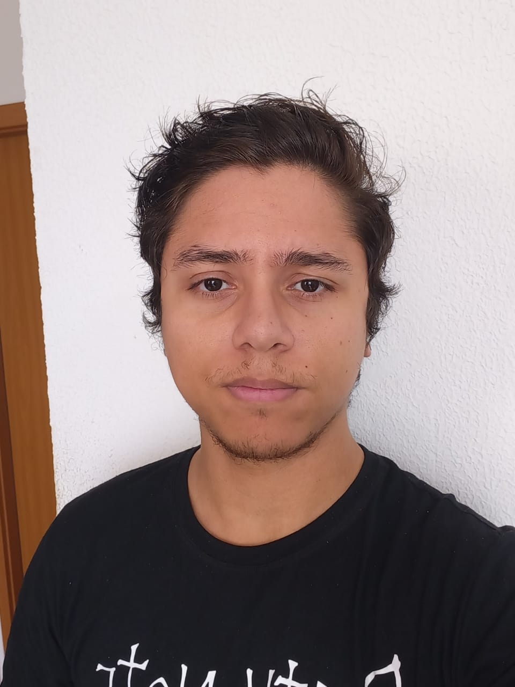

[PT-BR] Olá, primeiro gostaria de agradecer por tirar um tempo para visitar este pequeno canto da internet, como provavelmente já sabe, me chamo Igor, tive o primeiro contato com programação aos 12 anos de idade, a partir dai fiz do estudo da programação meu passa tempo, nessa época nem imaginava que poderia tornar isso minha profissão, eu só queria criar algo que alguém pudesse usar, bom, o resto é historia, hoje completa 15 anos que estudo programação e 10 que trabalho profissionalmente, antes da programação se tornar uma realidade na minha vida já fiz de tudo um pouco, fui garçom, monitor de crianças em festas infantís, ajudante em quermesses da igreja e técnico em manutenção de computadores (um adolescente precisa ganhar dinheiro não é?), mas hoje faz 10 anos que só programo e lidero outros programadores, bom, nas horas vagas também sou luthier, mas é isso, obrigado por ler até aqui e nos vemos por ai!
Senior Software Engineer with expertise in Full Stack Development
Senior Software Engineer
Sep 2024 – Present (4 months) | Minas Gerais, Brazil (Remote)
Senior Full Stack Software Engineer
Oct 2022 – Sep 2024 (2 years) | Belo Horizonte, Brazil (Remote)
Senior Full Stack Software Engineer
Apr 2020 – Oct 2022 (2 years and 7 months) | Marília, São Paulo, Brazil (Remote)
Mid-level Software Engineer
Feb 2019 – Apr 2020 (1 year and 3 months) | Marília, São Paulo, Brazil (On-site)
Junior SAP ABAP Consultant
Oct 2018 – Feb 2019 (5 months) | Lins, Brazil
Junior Software Engineer
Jan 2017 – Dec 2018 (2 years) | Lins, Brazil
Engenheiro de Software Sênior com expertise em Desenvolvimento Full Stack
Engenheiro de Software Sênior
Set 2024 - Presente (4 meses) | Minas Gerais, Brasil (Remoto)
Engenheiro de Software Full Stack Sênior
Out 2022 - Set 2024 (2 anos) | Belo Horizonte e Região (Remoto)
Engenheiro de Software Full Stack Sênior
Abr 2020 - Out 2022 (2 anos e 7 meses) | Marília, SP (Remoto)
Engenheiro de Software Pleno
Fev 2019 - Abr 2020 (1 ano e 3 meses) | Marília, SP (Presencial)
Consultor SAP ABAP Júnior
Out 2018 - Fev 2019 (5 meses) | Lins e Região, SP
Engenheiro de Software Júnior
Jan 2017 - Dez 2018 (2 anos) | Lins e Região, SP
Systems Analysis and Development, Information Technology (Technologist)
Period: 2017 - 2023 | Final Grade: 8.32
Skills: Leadership, Teamwork, JavaScript, Communication
Technician in Internet Computing (Web Development)
Period: 2015 - 2016 | Final Grade: 9.21
Skills: Teamwork, JavaScript, Communication
Maintenance and Support in Computing, Information Technology
Period: 2014 - 2015 | Final Grade: 8.73
Skills: Teamwork, JavaScript, Communication
Análise e Desenvolvimento de Sistemas, Tecnologia da Informação (Tecnólogo)
Período: 2017 - 2023 | Nota Final: 8,32
Competências: Liderança, Trabalho em equipe, JavaScript, Comunicação
Técnico em Informática para Internet (Desenvolvimento Web)
Período: 2015 - 2016 | Nota Final: 9,21
Competências: Trabalho em equipe, JavaScript, Comunicação
Manutenção e Suporte em Informática, Tecnologia da Informação
Período: 2014 - 2015 | Nota Final: 8,73
Competências: Trabalho em equipe, JavaScript, Comunicação
Obrigado por ler até aqui, ainda estou adicionando informações, como um monte cursos extra faculdade que já fiz, com o tempo vou arranjando paciência hehe.